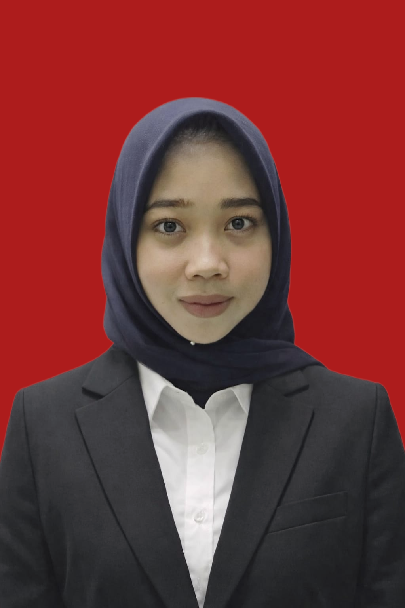

Halo! Perkenalkan nama saya Chelsa Syafira Chaniago. Saya lahir di Medan pada tanggal 30 Mei 2006. Saya adalah Mahasiswa Prodi Sistem Informasi Semester 4 di Universitas Muhammadiyah Sumatera Utara.
Saya memiliki ketertarikan yang besar dalam bidang teknologi terutama web development dan artificial intelligence. Saya selalu bersemangat untuk belajar hal-hal baru dan mengembangkan keterampilan saya.